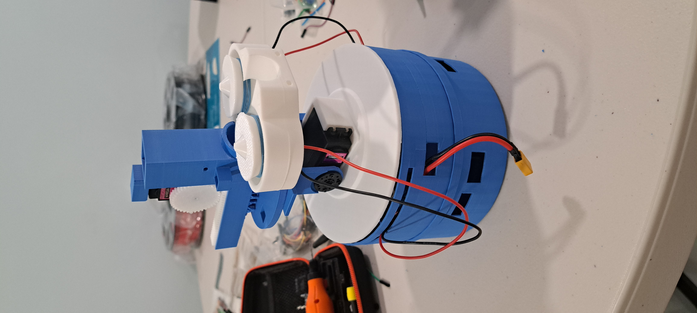

I build hardware/software systems from the ground up — embedded firmware, control systems, and the interfaces that run them. Projects varies in different fields. Currently studying Mechanical and Electrical Engineering at Rutgers Honors College.

A WiFi-controlled turret with servo-based aiming, built around an ESP32-S3. The system is operated through a custom web interface served directly from the microcontroller, using a PCA9685 servo driver for pan/tilt control and an L298N motor driver to power the flywheel launch mechanism. The firmware runs a live ballistics estimation model that calculates trajectory based on flywheel speed and target distance, displayed in real time through a canvas-based visualizer on the web interface. A key challenge was synchronizing servo and motor timing precisely enough to maintain consistent accuracy, which required several iterations of the firmware's control loop, validated through distance-based accuracy testing.
| Platform | ESP32-S3 |
| Hardware | PCA9685 servo driver, L298N motor driver, 3S LiPo |
| Firmware | Arduino / C++ |
| Interface | Web-based control panel, canvas trajectory visualizer |
| Code | github.com/[repo-name] |
A custom-built 5-inch quadcopter with a 3D-printed frame, controlled through a purpose-built wireless transmitter. The transmitter runs on an ESP32-S3 and communicates with a XIAO ESP32-S3 mounted on the drone, which acts as a wireless bridge relaying control signals to the flight controller. The drone is built around a CORVON F405 NC 50A flight controller running Betaflight for flight stabilization and motor control, paired with RS2205 2300KV brushless motors sized for the frame. Building the system required integrating the custom wireless link with Betaflight's expected input protocol, along with tuning the flight controller to the frame's specific power and motor configuration for stable, responsive flight.
| Platform | ESP32-S3 |
| Frame | Custom 3D-printed, 5-inch |
| Firmware | Betaflight, CORVON F405 NC 50A flight controller |
| Code | github.com/[repo-name] |
An inverted pendulum robot built for my Math IA, exploring pendulum motion through a real PID-controlled system rather than a purely theoretical model. An MPU6050 IMU measures the pendulum's tilt angle and angular velocity in real time, feeding that data into a PID control loop running on an ESP32-S3. The controller continuously calculates a correction and drives two NEMA 17 stepper motors, controlled through A4988 stepper drivers, to shift the base and keep the pendulum balanced upright. Tuning the PID gains was the core of the project.
| Platform | ESP32-S3 |
| Sensor | MPU6050 IMU (tilt angle, angular velocity) |
| Actuation | 2× NEMA 17 stepper motors, 2× A4988 stepper drivers |
| Control | PID control loop |
| Code | github.com/[repo-name] |
An autonomous fire-extinguishing maze robot built during my time in Columbia University's SHAPE program, developed collaboratively with a small team. The robot navigated an enclosed line maze using an IR line-tracking sensor, with maze-solving logic that prioritized checking the left side first at each junction to determine its path. Built around an Arduino Uno with a custom shield driving two 130 DC motors, the robot moved through the maze until a separate IR flame sensor detected a lit candle placed inside. On detection, it advanced toward the flame and triggered its extinguishing mechanism — a wet sponge mounted on a 9g servo arm that repeatedly struck the candle until the flame sensor no longer registered heat, confirming it was out.
| Platform | Arduino Uno, custom motor shield |
| Navigation | IR line-tracking sensor, left-priority maze-solving logic |
| Detection | IR flame sensor |
| Actuation | 2× 130 DC motors, 9g servo with sponge extinguisher |
| Context | Columbia University SHAPE program, team collaboration |
| Code | github.com/[repo-name] |
A cat-inspired quadrupedal robot built as a fork of the existing Sesame robot project, which I modified and extended rather than building from scratch. Changes included rewriting parts of the original codebase, adding new animations, and increasing the overall size of the frame to improve wire management. The robot uses 8 MG90S servos, two per leg, to perform a range of leg movements for walking and distinct poses. A 0.96" SSD1306 I2C OLED screen displays custom emoticons and faces, giving the robot a cat-like expressive personality. It runs on a Lolin/WeMos ESP32-S2 Mini with perfboards handling the wiring, connects over WiFi, and is controlled through a web interface.
| Platform | Lolin/WeMos ESP32-S2 Mini |
| Base Project | Forked and modified from Sesame robot |
| Actuation | 8× MG90S servos (2 per leg) |
| Display | 0.96" SSD1306 I2C OLED — custom animated faces |
| Power | 5V buck converter, perfboard wiring |
| Control | Web-based interface over WiFi |
| Code | github.com/[repo-name] |
A six-legged walking robot built to explore hexapedal locomotion and how a multi-legged platform can navigate rough, uneven 3D terrain. Each of the six legs uses three MG996 servos for a full range of motion, for 18 servos total, all driven through a PCA9685 servo driver and controlled by an ESP32-S3. Power comes from 18650 batteries stepped down through an XL4016E1 buck converter, with a fully custom 3D-printed chassis and leg structure designed specifically for this build. The biggest challenges were maintaining consistent stability across all six legs during a walking gait, since even small timing or positioning inconsistencies between legs would throw off the robot's balance, and managing power distribution across 18 servos operating simultaneously without brownouts or inconsistent torque. Solving both required careful tuning of the leg coordination sequence alongside the power delivery system.
| Platform | ESP32-S3 |
| Actuation | 18× MG996 servos (3 per leg) |
| Servo Control | PCA9685 servo driver |
| Power | 18650 batteries, XL4016E1 buck converter |
| Frame | Custom 3D-printed chassis and legs |
| Focus | Hexapedal gait stability, rough-terrain navigation |
| Code | github.com/[repo-name] |
One of my earliest projects and the one that first got me interested in building hardware, developed in collaboration with a colleague. The glove translates hand signs into audio or text output, aimed at helping a mute or deaf individual communicate more easily with someone unfamiliar with sign language. It uses 5 flex sensors to track finger bend across the hand, paired with an MPU6050 to capture hand orientation and motion, all wired on a custom perfboard and run through an Arduino Nano. The core challenge was software, not hardware: building a library of common ASL signs to reference against, and then writing a calibration system that could reliably match a live hand pose to the closest known sign in that library, accounting for natural variation in how the same sign is formed each time.
| Platform | Arduino Nano |
| Sensors | 5× flex sensors, MPU6050 (orientation/motion) |
| Build | Custom perfboard |
| Output | Audio / text translation |
| Core Challenge | ASL sign library + pose-matching calibration system |
| Collaboration | Built with a colleague |
| Code | github.com/[repo-name] |
A Foddian-style platformer built in Godot as a final project for a math class, designed to teach players about the history and origins of calculus in an engaging, game-based format. The player traverses a series of obstacle-based levels to reach different eras of history, meeting notable figures who each influenced the development of calculus as we know it today. The game combines public assets with custom-built ones to construct each era's environment and character design. Shout out to Jang Yoon, my math teacher, for the project concept.
| Engine | Godot |
| Genre | Foddian platformer |
| Theme | History and development of calculus |
| Assets | Public + custom-built assets |
| Context | Final project, math class |
| Code | github.com/[repo-name] |
A 2D treasure-hunting game written entirely in Java as a final project for AP Computer Science, and one of my earliest forays into game development, pulling together things I'd learned both in class and on my own. Inspired by Minecraft, the game has the player navigate a 2D world, solving puzzles and collecting 12 Eyes of Ender scattered throughout, before finally reaching the End to complete the game.
| Language | Java |
| Genre | 2D puzzle / exploration |
| Inspiration | Minecraft |
| Objective | Collect 12 Eyes of Ender, reach the End |
| Context | Final project, AP Computer Science |
| Code | github.com/[repo-name] |
One of my earliest experiences in web development, built during my term as Treasurer of my local Key Club while also serving as webmaster. I created the first website for our Key Club and our local Kiwanis Club, two related organizations under the same larger community service and leadership network. The site was originally built on Google Sites, where I added custom HTML elements beyond the platform's built-in components, and has since been updated further.
| Platform | Google Sites, custom HTML elements |
| Role | Webmaster, Key Club Treasurer |
| Organizations | Fort Lee Key Club & Kiwanis Club |
| Live Site | fortleekiwanis.org |
My first experience with web design, HTML, and CSS, built in collaboration with a colleague for the New Jersey Chemistry Olympiad. The site was designed to educate users on different sources of renewable energy and explain how each one works, from the underlying science to real-world applications. The biggest challenge was learning HTML and CSS entirely from scratch and building a complete, polished site within a single month. The project placed in the top 5 for the web design category at the competition.
| Stack | HTML, CSS |
| Focus | Renewable energy education |
| Context | NJ Chemistry Olympiad, web design category |
| Result | Top 5 placement |
| Collaboration | Built with a colleague |
| Code | github.com/[repo-name] |
[Project description]
| Platform | [e.g. ESP32-S3] |
| Stack | [key components / libraries] |
| Code | github.com/[repo-name] |
I'm a Mechanical and Electrical Engineering student at Rutgers University–New Brunswick's Honors College, and most of what you'll find here started as a way to learn something new rather than a plan to build a specific product. Whether it's firmware, robotics, or a game engine I'd never touched before, I like picking a project slightly outside my comfort zone and figuring it out from the ground up. Outside of building, I've spent a lot of time in leadership and community service — serving as NJKC District Lieutenant Governor and Treasurer for my local Key Club, and volunteering in several local organizations.